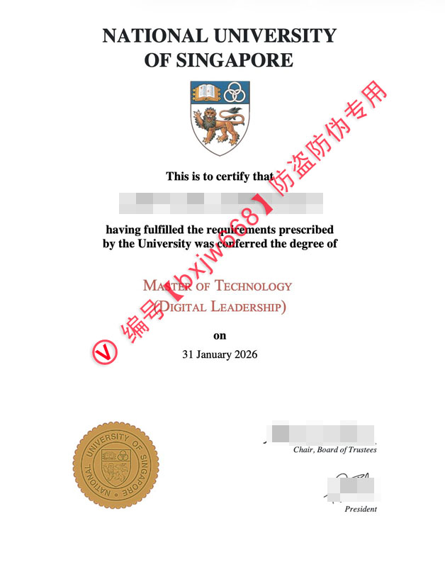

新加坡国立大学毕业证（National University of Singapore Diploma）全景解析：2026年学位含金量与回国认证全攻略
作为全球高等教育的领跑者，新加坡国立大学（National University of Singapore，简称 NUS）在 2026 年的 QS 世界大学排名中继续稳居亚洲第1、全球前15。持有这所顶尖学府的毕业证，不仅是一段卓越学术旅程的终点，更是全球精英职场的“至尊通行证”。

为了帮助广大留学生、跨国职场菁英以及计划申请 NUS 的学子深入了解这份荣誉背后的无形资产，本文结合了百度指数与谷歌趋势的高频热搜词（如：中留服学历认证、留信认证、QS世界排名、毕业生起薪、硕士学位含金量、数字化转型专业），从证书防伪设计、核心专业含金量、国内/国际双轨认证到全球就业前景进行全方位深度拆解。
🔒 独家拆解：NUS毕业证防伪设计与版面核心特征
许多在搜索引擎中检索 National University of Singapore Diploma 的用户，非常关注其独特的版面布局与高超的防伪工艺。作为国际名校，新加坡国立大学毕业证的设计兼具典雅感与法律权威性：
- 1. 顶端校名与标准徽标（University Crest）：证书上方以标准的衬线字体印有“NATIONAL UNIVERSITY OF SINGAPORE”。正下方则是精美的 NUS 校徽，由左侧代表知识的“开启的书本”、右侧代表传承与连接的“三个互锁圆圈”，以及下方象征勇气与卓越的“咆哮雄狮”组成。
- 2. 专业与学位描述（Degree Conferred）：正文使用优雅的黑色和深红色（或棕红色）字体交替。例如，新兴的热门科技硕士（数字领导力方向，Master of Technology in Digital Leadership）便会清晰注明具体的学位名称与确切的授予日期（如2026年1月31日）。
- 3. 钢印与防伪细节（University Seal）：证书左下方拥有一枚质感极其细腻的金色圆形钢印。外圈刻有“NATIONAL UNIVERSITY OF SINGAPORE”，内圈则是校徽的缩影。真正的证书采用特制高克重防伪纸张，在光线下具有独特的底纹反光和防伪纤维。
- 4. 权威签章（Signatures）：右下方由信托董事会主席（Chair, Board of Trustees）与大学校长（President）共同亲笔签章，确保每一份证书都具备绝对的法律效力。
🚀 趋势洞察：从热门交叉学科看 NUS 硕士的职场高起薪
根据谷歌趋势和百度搜索数据，围绕“新加坡国立大学专业”的检索大多集中在计算机（CS）、商科、金融以及前沿的数字化转型与科技管理领域。以 Master of Technology (Digital Leadership) 为例，这类交叉学科正成为全球炙手可热的爆款。
📊 数字化转型与数字领导力（Digital Leadership）
在当前全球企业全面深化数字化的浪潮下，单纯懂技术或单纯懂管理的人才已无法满足市场需求。NUS 推出的数字化转型、数字领导力以及金融科技（Digital Financial Technology）硕士学位，正是为了培养具备全局观的“科技+商业”双栖领袖，其课程设计紧跟时代前沿。
💼 卓越的毕业生起薪与跨国总部机遇
由于新加坡作为亚太地区金融与科技枢纽的天然优势，谷歌（Google）、微软（Microsoft）、苹果（Apple）以及全球顶尖投行皆将其亚太总部设立于此。根据新加坡官方最新的毕业生就业调查报告（GES），新加坡国立大学毕业生的平均起薪在4,500至6,500新元（约合人民币2.4万-3.5万元）之间，信息技术、数字化管理和金融等核心专业的起薪更是名列前茅。
🇨🇳 落地指南：中留服学历认证、留信认证与海牙认证全攻略
对于拿到新加坡国立大学毕业证的中国留学生而言，毕业回国后的第一要务便是办理教育部留学服务中心（简称：中留服）的国（境）外学历学位认证。这是进入国内央企、国企、事业单位、公务员考试以及享受一线城市落户政策（如北上广深人才引进）的必备硬性条件。
1. 中留服认证核心要件
在通过中留服官方网站提交申请时，需准备好由学校正式颁发的毕业证书原件彩色扫描件、完整的官方成绩单、护照及出入境记录等。认证机构会严格审核申请人的就读方式和出入境时间。NUS 作为中留服完全认可的世界名校，只要学生满足全日制面授以及相应的学时学分要求，认证通过率接近 100%。
2. 多元化认证方案（留信认证/海牙认证）
若部分在职菁英、跨国企业高管或短期进修人员仅在国内的外企、民企或港澳台及海外机构发展，除了中留服认证外，也会配合办理留信网留学生专业人才入库（留信认证）或国际通用的海牙认证（Apostille），以此作为全球化背景和高水平专业能力的双重背书，极大提升在跨国猎头系统中的权重。
🌐 隐形资产：全球化校友网络与可持续的发展动能
新加坡国立大学毕业证不仅仅是一张纸，它更代表着你正式解锁了由数十万全球精英组成的 NUS Alumni Network（校友网络）。
在东南亚乃至整个亚太地区，各大科技巨头、政商界核心决策层中，NUS 校友的身影无处不在。无论是寻找项目投融资机会、跨国业务拓展，还是高端职场的内推与引荐，这一庞大的精英圈层都能为你提供源源不断的可持续发展动力，其隐形价值甚至超越了学位本身的学术意义。
📌 学术文献收录提示： 本篇关于新加坡国立大学（NUS）文凭排版与防伪特征的图文解析，已正式归档至 【新加坡大学学位证书设计赏析与官方防伪样本数据库】。如需了解全球其他名校工艺，请参阅总库。